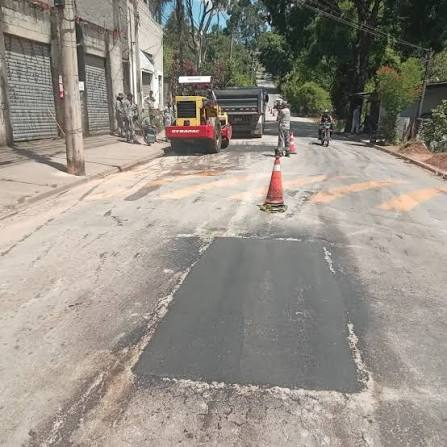
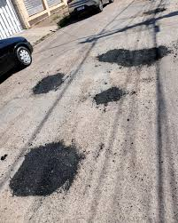
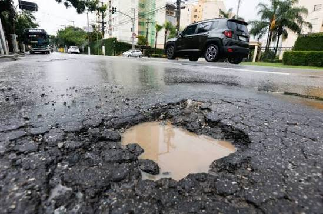
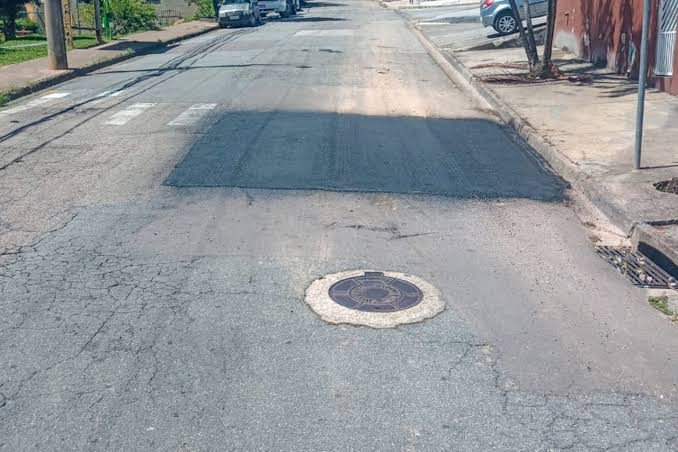

CRÍTICA
PSP-2026-1042
• Em Execução
Buraco na via
(Endereço fictício) Rua Luiz Gonzaga, altura do nº 111
📅 18/09/2026 · Campo Limpo

Visão resumida de todos os registros feitos na plataforma.
6 ocorrência(s) encontrada(s)

CRÍTICA(Endereço fictício) Rua Luiz Gonzaga, altura do nº 111
📅 18/09/2026 · Campo Limpo
 ALTA
ALTA
(Endereço fictício) R. Fonceca Remos - Petrópolis
📅 24/09/2026 · Campo Limpo

MÉDIA(Endereço fictício) Estrada do Campo Limpo, altura do nº 222
📅 02/09/2026 · Campo Limpo
 BAIXA
BAIXA
(Endereço fictício) Rua Oliveira da Cruz, 450 - Campo Limpo
📅 05/10/2026 · Campo Limpo

ALTA(Endereço fictício) Av Carlos Lacerda, 5555 - Campo Limpo
📅 01/10/2026 · Campo Limpo

MÉDIA(Endereço fictício) Rua Professor Luiz Farya, 190 - Campo Limpo
📅 28/08/2026 · Campo Limpo